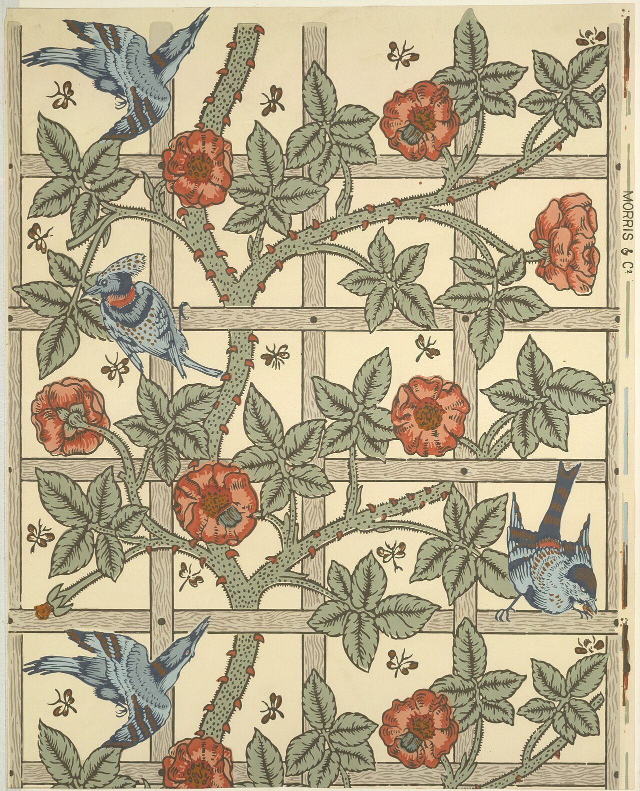

References / Other / 361
Trellis wallpaper
Morris’s first wallpaper design: climbing roses and birds on a square wooden trellis, drawn flat on an open cream ground.
- Source
- The Met: Trellis, 23.163.4h
- Creator
- William Morris, Morris & Company, and Philip Webb (as the Met lists them)
- Made
- Designed 1862, first produced 1864
- Style
- Arts and Crafts (agent-proposed, not yet reviewed by a person)
- Moods
- Domestic, fresh, handmade
- Evidence
- Inspected the Metropolitan Museum of Art image DT255077 of sheet 23.163.4h, through its CC0 Wikimedia Commons copy (3239 × 4000 px; viewed at 1280 px wide). The Met’s own collection API refused scripted access (HTTP 403), so the object data come from the Commons record of the Met upload. The Met lists William Morris, Morris & Company, and Philip Webb as artists. Webb is often credited with the birds, but that record does not say so.
- Reviewed
- Rights
- Open license, stored. License: CC0-1.0. Rights policy

Context
The Met record gives the date as designed 1862, first produced 1864; the medium as block-printed wallpaper; and the sheet size as 68.6 × 54.6 cm. It was bought with the Edward C. Moore Jr. Gift, 1923. Wikimedia Commons record of the Met upload.
Morris began his earliest wallpaper designs while he lived at Red House (1860–1865). Wikipedia: Red House, Bexleyheath.
Observed
- A square trellis of grey-brown laths, with wood grain and nail heads, divides the sheet into large open squares.
- Thorny green rose stems climb across the trellis with sage-green leaves and salmon-red roses.
- Four blue birds in different poses perch or fly among the stems. Small brown insects float in the open squares.
- The ground is a plain cream; roughly half of the sheet shows it.
- Every shape has a dark outline and flat fills. Stippling on the stems and birds adds texture, not shading.
- “MORRIS & Cº” is printed in small capitals on the right margin, beside colour-registration marks.
Why it belongs
The prospect notes describe Arts and Crafts pattern as dense and symmetrical. Trellis is neither: it is open, and the birds break the symmetry. The lattice is visible here instead of hidden.
The palette is lighter than the later indigo-discharge cottons such as Strawberry Thief: cream, sage, salmon, and pale blue.
Borrow
Show the grid itself as a motif, like a trellis, and let plants cross it at irregular points.
Leave a light, open ground and use a few outlined, flat motifs for a calmer version of the style.
Measured
Machine-extracted by tools/image-traits.py on . Full measurement.
- Mean chroma
- 0.17
- Palette
- #e6d8b3 25%
- #a7a787 16%
- #c2b596 11%
- #827a60 4%
- #f5e7c1 4%
- #d1c4a4 4%
- #8c876b 4%
- #756f57 4%

